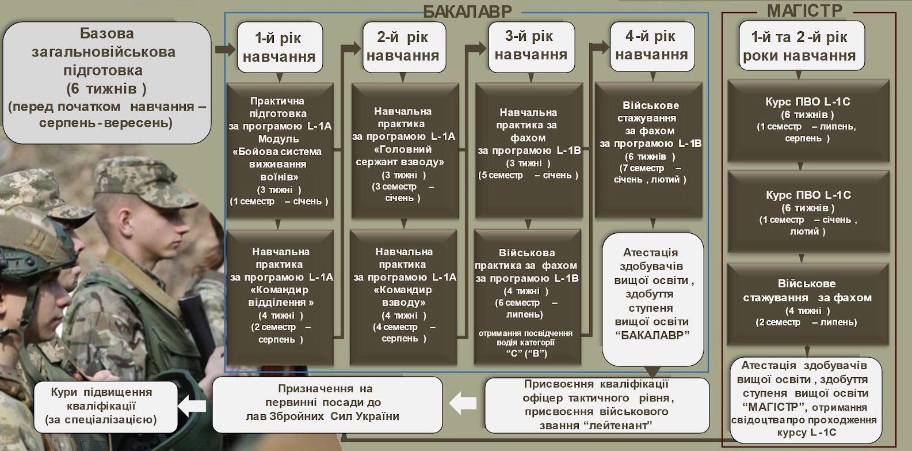

Освіта
Освітня діяльність у Військовому інституті Київського національного університету імені Тараса Шевченка (далі – ВІКНУ) реалізується як освітній процес, проводиться з метою забезпечення здобуття вищої освіти, задоволення інших освітніх потреб курсантів, слухачів, студентів, ад'юнктів та здійснюється на підставі ліцензії на провадження освітньої діяльності КНУТШ серія АЕ № 636455 від 09.06.2015 та сертифікатів про акредитацію, передбачає видачу випускникам ВІКНУ документів про вищу освіту за акредитованими освітніми програмами. Освітня діяльність ВІКНУ спрямована на організацію, забезпечення (навчально-методичне, кадрове, інформаційне, матеріально-технічне (логістичне) забезпечення тощо) та реалізацію освітнього процесу.
Навчальна робота
Освітній процес у Військовому інституті Київського національного університету імені Тараса Шевченка (далі – ВІКНУ) проводиться з метою підготовки висококваліфікованих військових фахівців за першим (бакалаврським) та другим (магістерським) рівнями вищої освіти, рівнями військової освіти для комплектування посад офіцерського складу в Міністерстві оборони України, Збройних Силах України та інших складових сил оборони, забезпечення набуття ними нових та вдосконалення раніше набутих компетентностей за програмами післядипломної освіти та в системі професійної військової освіти, а також задоволення інших освітніх потреб курсантів, слухачів, студентів, ад'юнктів (далі – здобувачі освіти) та здійснюється на підставі ліцензії на провадження освітньої діяльності Київського національного університету імені Тараса Шевченка (далі – КНУТШ) та сертифікатів про акредитацію, передбачає видачу випускникам ВІКНУ документів про вищу освіту за акредитованими освітньо-професійними програмами.
Дистанційне навчання

Курси підвищення кваліфікації та професійної військової освіти
(КПК, КПВО)
Платформа дистанційного навчання для курсантів та слухачів
Схема підготовки
Здобуття певних ступенів вищої освіти та рівнів військової освіти передбачає поєднання формальної та неформальної освіти. У рамках формальної освіти ВІКНУ провадить освітній процес на підставі діючої ліцензії КНУТШ на провадження освітньої діяльності за першим (бакалаврським) і другим (магістерським) рівнями вищої освіти та видає випускникам, які опанували відповідну освітньо-професійну програму та успішно склали атестацію, документи про вищу освіту за відповідною акредитованою освітньо-професійною програмою (спеціальністю). У рамках неформальної освіти освітній процес у ВІКНУ здійснюється за освітніми програмами курсів професійної військової освіти та передбачає видачу особам, які успішно завершили навчання відповідного свідоцтва (сертифіката).
Професійна військова освіта є спеціалізованою освітою військового спрямування, яка здобувається на курсах професійної військової освіти тактичного рівня. При формуванні змісту професійної військової освіти додатково враховуються вимоги стандартів НАТО.
В освітнньо-професійні програми підготовки офіцерів тактичного рівня за ступенем вищої освіти “бакалавр” інтегровано базовий курс тактичного рівня L-1A (40 кредитів) та фаховий курс тактичного рівня L-1B (30 кредитів). Командний курс тактичного рівня L-1C (20 кредитів) інтегровано в освітні програми підготовки офіцера тактичного рівня за ступенем вищої освіти “магістр”.
Під час підготовки фахівців за програмами курсів L-1A, L-1B, L-1С вивчаються питання процедури планування TLP (Troop Leading Procedures) та MDMP (Military Decision Making Process).

ВІКНУ здійснює підготовку військових фахівців:
-
за денною формою навчання:
- схема навчання “курсант”: за освітнім ступенем “бакалавр” – 4 роки;
- схема навчання “слухач”: за освітнім ступенем “магістр” – 1,5 року.
-
за заочною формою навчання:
- схема навчання “слухач”: за освітнім ступенем “магістр” – 1,5 роки;
- схема навчання “студент”: за освітнім ступенем “бакалавр” – 5 років (із числа військовослужбовців військової служби за контрактом рядового, сержантського (старшинського) складу).
- Схема навчання “офіцер запасу”: військова підготовка громадян України, які навчаються за програмою підготовки офіцерів запасу за кошти фізичних (юридичних) осіб з 13-ти військово-облікових спеціальностей на трьох кафедрах Київського національного університету імені Тараса Шевченка (проводиться за відповідними ВОС методом військового дня) – 2 роки.
На замовлення Міністерства оборони України на базі факультетів Київського національного університету імені Тараса Шевченка здійснюється підготовка ад’юнктів за третім (освітньо-науковим) рівнем вищої освіти.
Методична робота
Методична діяльність у ВІКНУ є складовою частиною освітнього процесу й одним з видів діяльності керівного складу, науково-педагогічних (педагогічних) працівників, командирів підрозділів здобувачів освіти та інструкторського складу. Вона охоплює діяльність, спрямовану на науково обґрунтовану організацію освітнього процесу та його проведення з урахуванням наукових досягнень у галузі освіти та підготовки здобувачів освіти.
Основними завданнями методичної діяльності ВІКНУ є:
- науково-методичне забезпечення організації, проведення та управління якістю освітнього процесу;
- підвищення методичної майстерності керівного складу, науково-педагогічних (педагогічних) працівників, інструкторського складу, командирів підрозділів здобувачів освіти ВІКНУ;
- удосконалення методики, форм та технологій проведення всіх видів навчальних занять.
Основними формами методичної діяльності у ВІКНУ є:
- проведення навчально-методичних (методичних) зборів (до 5 діб), нарад, науково-методичних конференцій та семінарів;
- засідання вчених (методичних) рад ВІКНУ та факультетів;
- засідання кафедр з розгляду питань методики навчання та виховання здобувачів освіти;
- інструкторсько-методичні, показові, відкриті та пробні навчальні заняття;
- лекції, доповіді, повідомлення з питань методики навчання, загальної та військової педагогіки та психології;
- розроблення і вдосконалення навчально-методичних матеріалів, у тому числі матеріалів для проведення діагностики успішності навчання здобувачів освіти;
- проведення педагогічних (методичних) експериментів і втілення їх результатів в освітній процес;
- вивчення та реалізація в освітньому процесі вимог керівних документів, матеріали передового педагогічного досвіду та досвіду бойової підготовки військ (сил,) ведення бойових дій Збройними Силами України та іншими складовими сил оборони України;
- вивчення та впровадження в освітній процес кращих методик підготовки, військових фахівців прийнятих у збройних силах держав - членів НАТО;
- розроблення пропозицій щодо вдосконалення освітніх програм підготовки військових фахівців, вимог до системи забезпечення якості вищої освіти, навчальних планів, робочих програм навчальних дисциплін;
- розроблення науково обґрунтованих рекомендацій щодо планування роботи науково-педагогічних (педагогічних) працівників, здобувачів освіти;
- взаємні та контрольні відвідування навчальних занять науково-педагогічними (педагогічними) працівниками.
Відділ забезпечення якості освітньої діяльності та вищої освіти
Відділ забезпечення якості освітньої діяльності та вищої освіти Військового інституту створено з метою:
- методичного забезпечення та організаційного супроводу процесу забезпечення відповідності результатів навчання встановленим стандартам та потребам замовників на підготовку військових фахівців;
- формування та підтримки механізмів постійного удосконалення освітнього процесу;
- координації та моніторингу діяльності структурних підрозділів Військового інституту з питань забезпечення якості освітньої діяльності та вищої освіти;
- інформаційної та аналітичної підтримки керівництва Військового інституту в питаннях забезпечення якості освітньої діяльності.
Основними завданнями Відділу є:
- формування політики, процедур та практик для академічного забезпечення якості вищої освіти у Військовому інституті;
- організація заходів із підготовки до проведення ліцензування освітньої діяльності та акредитації освітньо-професійних, освітньо-наукових, освітніх програм, курсів професійної військової освіти у Військовому інституті;
- організація і проведення заходів, спрямованих на визначення відповідності результатів навчання вимогам законодавства, стандартам вищої освіти, професійним стандартам, а також потребам військ;
- забезпечення дотримання академічної доброчесності НПП Військового інституту та здобувачами вищої освіти, зокрема створення й забезпечення функціонування системи запобігання та виявлення академічного плагіату;
- впровадження в освітній процес та підготовку військових фахівців досвіду підготовки та об’єднаного застосування сил і засобів складових сил оборони, а також стандартів та процедур, прийнятих у державах - членах НАТО.